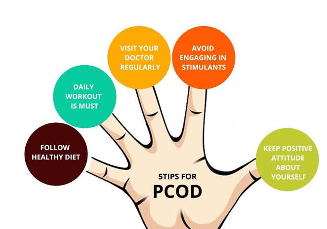
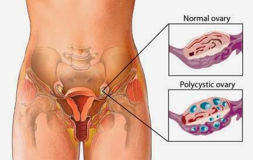
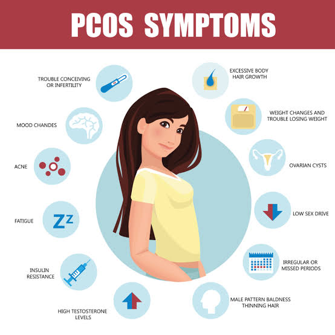

PCOS is a problem with hormones that affects women during their childbearing years (ages 15 to 44). Between 2.2 and 26.7 percent of women in this age group have PCOS (1, 2Trusted Source).
PCOS affects a woman’s ovaries, the reproductive organs that produce estrogen and progesterone — hormones that regulate the menstrual cycle. The ovaries also produce a small amount of male hormones called androgens.



Heavy bleeding
The uterine lining builds up for a longer period of time, so the periods you do get can be heavier than normal
Irregular periods
A lack of ovulation prevents the uterine lining from shedding every month. Some women with PCOS get fewer than eight periods a year (10Trusted Source).
Hair growth
More than 70 percent of women with this condition grow hair on their face and body — including on their back, belly, and chest . Excess hair growth is called hirsutism
Weight gain
Up to 80 percent of women with PCOS are overweight or obese
Acne
Male hormones can make the skin oilier than usual and cause breakouts on areas like the face, chest, and upper back